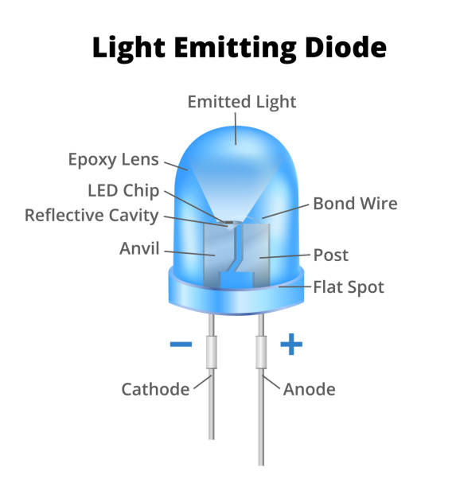

Signal, Logic, and Light
Instructor: Mark Hellar (Hellar Studios LLC)
Location: TIAT (151 Powell St)
Introductions!
The Studio Spirit
Code can be hard and hardware can messy. Let's embrace it.
Build Together
If you get your LEDs working, help the person next to you. The best way to master a signal path is to troubleshoot someone else's.
Safe to Fail
Flickering lights and "magic smoke" are part of the process. We are here to experiment, break things, and find the logic in the noise.
Make something cool. Make a new friend.
I'm glad you all are here!!
Class Overview
1. Hardware Foundation
- History: Pre-addressable to modern "Smart Pixels."
- Assembly: Soldering and enclosures.
2. Controlling Light
- CodingUse the Arduino IDE
- Patterns from scratch:Fun with Arduino C++
- The Libraries: FastLED Adafruit and friends!
3. Scaling Up
- Networking: TouchDesigner
- Protocols: The DMX Lighting protocal and Wireless control via E1.31.
- Demo: 2,000 LED system.
How this class came to be
Studio Practice as Curriculum
Software Check-in
Let's make sure the baseline tools are ready to go.
1. Arduino IDE + ESP32
- Core: Check Tools > Board > Boards Manager. Search for "ESP32" by Espressif.
- Selection: Can you see "ESP32-C3 Dev Module" in your boards list?
- Libraries: Have you installed FastLED or Adafruit NeoPixel from the Library Manager?
2. TouchDesigner
- Version: Latest Stable Build installed.
- License: Non-Commercial (Free) is perfectly fine for today.
- The Test: Can you open a blank project and place a DMX Out CHOP?
What is an LED?
The Semiconductor Physics
- The Diode: A one-way valve for electricity. Current flows from the Anode (+) to the Cathode (-).
- The Photon: When electrons drop into "holes" in the semiconductor material, they release energy as light.
- The Color: Defined by the material of the chip (Gallium, Arsenic, etc.), not a colored filter or bulb.
Jim Campbell
The Greatest of All Time!
The Discrete Era
- No WS2812B chips.
- Custom electrical engineering for every pixel.
- Respect the engineering: We are standing on his shoulders.
The Wiring Constraint
Standard LEDs require discrete wiring for every channel.

Scaling this to 2,000 pixels is a physical impossibility for installation work.
Evolution of the LED


Shift to Serial Logic

Integrated Control

- Receive: Listens for its specific 24-bit instruction.
- Decode: Sets the internal PWM for Red, Green, and Blue.
- Propagate: Re-shapes the signal and sends the rest down the line.
Very Scalable!

Chainable, integrated resistors, and low per-unit cost.
Led Mecca: Shenzhen
The Microcontroller: ESP32-C3
RISC-V Microcontroller with Integrated Radio
Architecture
- Clock Speed: 160 MHz Clock Speed(single core)
- Memory: 400KB RAM. Essential for large pixel buffers (24-bits per LED).
- Connectivity: 2.4 GHz Wi-Fi. so we can make a Network controlled DMX lighting fixture.
- Affordable:Currently 4 dollars on Amazon.

How To Solder
- Red:5V.
- Black:GND.
- Green(data):Pin 4.
- Red:5V.
- Black:GND.
- Green(data):DIN.
Before plugging in, hold the BOOT button.
Let go after the USB is connected.
The Arduino IDE
The Workflow
- Write: You write instructions in C++ (a language the chip understands).
- Compile: The IDE translates your text into binary "machine code."
- Upload: The compiled code is pushed over USB-C to the ESP32's memory.
setup() once, then runs a loop() thousands of times a second forever.
The Heavy Lifting
What’s actually happening under the hood?
Under the hood, the microcontroller has to manually flip a tiny switch on and off at an incredible speed to "hand-crank" a unique electrical message for every single light.
It’s a nanosecond-perfect dance of pulses that has to happen millions of times a second just to change a color.
But we get to use libraries to make it easier.
Libraries

We use libraries to handle the 800kHz timing requirements of the WS2812B protocol, allowing us to focus on generative logic.
Installing the Toolkits
We will use two core libraries for the ESP32-C3.
The Process
- Open Arduino IDE.
- Go to Sketch > Include Library > Manage Libraries...
- Search and Install the following:
-
1. FastLED
The industry standard for creative coding, color math, and easy animations. -
2. NeoPixelBus
The "Pro" choice for ESP32. It uses internal hardware (RMT) to ensure the lights never flicker.
NeoPixelBus
#include
const uint16_t PixelCount = 64;
const uint8_t PixelPin = 4;
// three element pixels, in different order and speeds
NeoPixelBus strip(PixelCount, PixelPin);
//NeoPixelBus strip(PixelCount, PixelPin);
void setup() {
strip.Begin();
strip.Show();
}
void loop() {
SINGLE PIXEL
RgbColor me(255, 127, 0);
strip.SetPixelColor(5, me);
strip.Show();
delay(500);
// int r = random(0, 255);
// int g = random(0, 255);
// int b = random(0, 255);
// for(int i = 0; i < PixelCount; i++) {
// r = random(0, 255);
// g = random(0, 255);
// b = random(0, 255);
// RgbColor rand(r, g, b);
// strip.SetPixelColor(i, rand);
// }
// strip.Show();
// delay(500);
}
FastLED: Creative Control
Fast and flexible. Best for generative art and color fades.
#include
#define NUM_LEDS 64
#define DATA_PIN 4
CRGB leds[NUM_LEDS];
void setup() {
FastLED.addLeds(leds, NUM_LEDS);
FastLED.setBrightness(40);
}
void loop() {
// SINGLE PIXEL
leds[0] = CRGB::Red;
FastLED.show();
delay(500);
// for(int i = 0; i < NUM_LEDS; i++) {
// leds[i] = CRGB::Blue;
// }
// FastLED.show();
// delay(500);
}
Local Case Study: Lucy in the Sky
Erwin Redl | Union Square Subway Station

- Scale: Hundreds of custom edge-lit lasercut light panels.
- Protocol: Uses DMX to orchestrate a massive orchestraed light show
- Concept: Looking and thinking about a large scale lighting installation the public sphere
Module 3: The Expanded Field
From Local Binaries to Networked Systems
WLED: The Swiss Army Knife
A high-performance web server for ESP32 that handles the "heavy lifting" of LED control for you.
- Instant UI: Control your 8x8 matrix from any web browser or phone.
- Open Source: 100+ built-in effects and color palettes.
- Integration: Acts as a "bridge"—it listens for DMX/E1.31 data and pushes it to the pixels.
WLED: Install
The Method:
- Connect via USB (Hold BOOT button).
- Visit: install.wled.me
- Select "Install WLED" (v0.14 or higher for C3).
Why we use it:
- No Code Required: Installs via Chrome/Edge.
- Built-in Art-Net/DMX: Ready to receive data from TouchDesigner immediately.
- Mobile App: Change patterns from your phone.
The DMX Protocol
Direct technical breakdown of the signal hierarchy.
1. The Channel
- The smallest unit of data (8-bit).
- Value range: 0 to 255.
- Controls one parameter (e.g., Red intensity).
2. The Universe
- A complete set of 512 Channels.
- Sent as a continuous loop (refreshing ~44 times a second).
- Our 8x8 matrix uses 192 channels per universe (64 pixels × 3).
3. The Address
- The starting point for a physical device.
- An RGB fixture addressed at 1 consumes 1, 2, and 3.
- The next fixture must start at 4 to avoid overlap.
Network Protocols: DMX, E1.31, & Art-Net
How we send "Light Data" over a standard network.
- DMX512: The industry standard. 512 channels of data (0-255).
- Art-Net / E1.31: "DMX over Ethernet." This lets us send thousands of universes over standard Wi-Fi or Cat6 cables.
- The Benefit: One laptop can now control an entire building’s worth of LEDs.

QLC+ Demo: Open Source Lighting Console
Professional-grade lighting control software that’s completely free.
- Virtual Console: Create faders and buttons to trigger your 8x8 patterns.
- Function Manager: Build "scenes" and "chases" just like a stage lighting pro.
- Assignment: Routing specific software channels to our physical ESP32 IP addresses.
TouchDesigner: Jam!
TouchDesigner: DMX Out
Moving from "pre-made" effects to real-time generative data.
- DMX Out CHOP: The node that packages your visual data into E1.31 packets.
- Unicast vs. Multicast: Directing data specifically to your ESP32's IP.
- Latency: Tuning the network for real-time, "frame-perfect" performance.
PISKEL
[ 8x8 Sprite Design + Animation ]
- 01. Set Resolution to 8x8
- 02. Paint frame-by-frame animations
- 03. Export as C-code or Sprite Sheet
PRO TIP: Use the "Live Preview" window to see how your low-res art looks when scaled up before sending it to the ESP32.
WWW.PISKELAPP.COM
Pixilart
[ Advanced Pixel Compositions ]
- Layer-based workflows →
- Custom color palette syncing →
- Community asset library →
DESIGN TIP: Use the Layer feature to separate your background colors from your foreground "sprites" before merging for the matrix.
WWW.PIXILART.COM